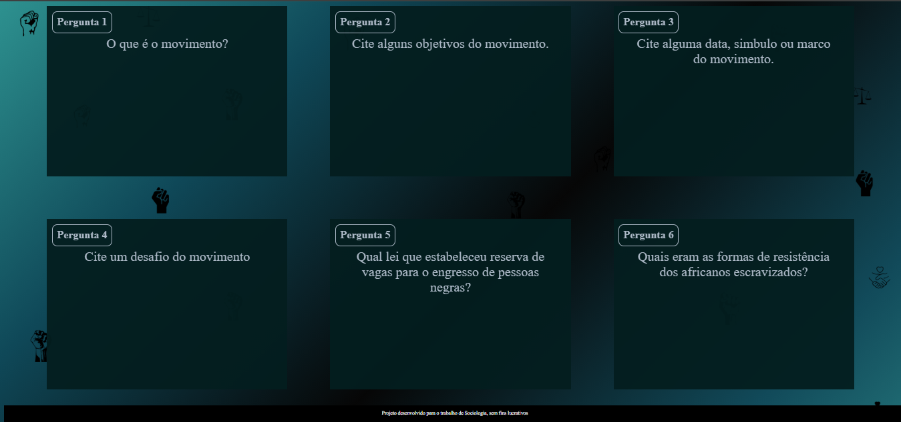

Meus projetos

Flash Cards
Este projeto é uma página web que possui Flash Cards sobre o Movimento Negro. É uma forma interativa de ver conteúdos, muito utilizado para a revisão.

Desenho
Este projeto é um jogo interativo onde que sejam feitos desenhos com retângulos.

Site do colégio
Este projeto fala um pouco da nossa turma e possui os nomes dos alunos.